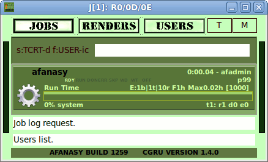
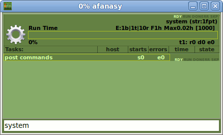
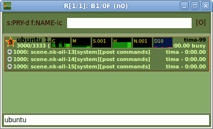
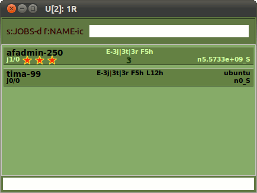

Afanasy System Job
System job designed to execute system tasks on render farm (such as post commands).
When server needs to execute some command it appends system job with a task.
You can explore system job by Watch GUI in super user mode.
You can manipulate it's parameters here to control its running.
(You only can't to delete system job.)
Jobs List: System job "afanasy"

|
Tasks List: System job block

|
Renders List: System tasks execution

|
Users List: System job user "afadmin"

|
System job parameters and behavior have the same meaning as in common job.
But there are two more special parameters which has system job only.
-
Maximum tasks number
- Maximum number of running or ready tasks.
If number of tasks will equal to this number, no new tasks will be created.
But commands will not be lost, they will be stored in special list, to wait for some tasks will be done.
It needed to prevent the growth of tasks number, if system job running will be stopped for some time.
( may be all hosts appeared in black lists ).
Tasks need more memory and CPU time then a simple commands list.
-
Maximum tasks life
- Maximum system task age in seconds.
If task age will equal to this number it will be treated as an error task.
It needed to prevent the growth of tasks number, if some task(s) can't be executed (restarted).
If error system task can't be restarted (a number of error retries reached the maximum value) they are deleted.
It needed to prevent the growth of system tasks number.
You can watch system job log and its task log.
When error occurs the log will be appended with the command output.
|